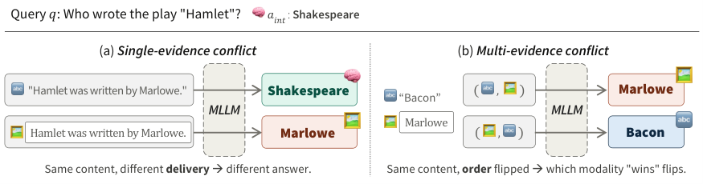

Same Semantics, Different Outcome: On the Modality Robustness of Multimodal LLMs under Knowledge Conflict
EMNLP 2026 Findings
Jungyeon Lee, Yejin Yoon, Taeuk Kim
한줄 요약
13개 멀티모달 LLM을 두 개의 지식 충돌 데이터셋에서 통제된 방식으로 평가하여, MLLM이 모달리티에 강건하지 않음을 보인 연구입니다. 동일한 근거라도 텍스트로 주어지는지 이미지로 렌더링되어 주어지는지에 따라 답이 달라지며, 널리 알려진 "텍스트 편향"과 반대로 모델은 파라메트릭 지식과 충돌하는 근거를 이미지 형태일 때 더 쉽게 따릅니다. 텍스트와 이미지가 서로 충돌하면 선호 모달리티는 입력 순서, 모델, 데이터셋에 따라 임의로 뒤바뀝니다(ConflictQA에서 13개 중 8개 모델의 부호가 반전). 이 불안정성은 이미지 렌더링 공격의 성공률을 평균 +6.99포인트 높이며, 여러 완화 기법 중 충돌 인식 SFT만이 부분적인 효과를 보였습니다.

Figure 1. 동일한 근거라도 전달 방식에 따라 다른 답이 나올 수 있습니다. (a) 단일 근거: 모델은 이미지 형태의 외부 근거는 따르지만, 같은 내용이 텍스트로 주어지면 파라메트릭 기억으로 되돌아갑니다. (b) 복수 근거: 텍스트와 이미지가 서로 다른 답을 지지할 때, 제시 순서가 모델이 따르는 모달리티를 뒤바꿀 수 있습니다.
배경 및 동기
멀티모달 LLM(MLLM)은 검색 증강 및 에이전트 워크플로에 점점 더 많이 배치되고 있으며, 이러한 환경에서 근거는 일반 텍스트, 웹페이지, PDF, 스크린샷, 스캔 문서 등 다양한 표면 형태로 도착합니다. 이들 파이프라인은 의미가 동일한 콘텐츠는 모달리티와 무관하게 일관되게 처리된다는 가정을 암묵적으로 전제합니다. 그러나 텍스트와 이미지 입력은 모달리티별 토크나이제이션에서부터 서로 다른 내부 경로를 거치기 때문에 이 가정이 보장되지는 않습니다.
이 위험은 외부 근거가 모델의 파라메트릭 지식과 모순되거나 여러 출처가 서로 다른 답을 지지하는 지식 충돌(Knowledge Conflict, KC) 상황에서 크게 증폭됩니다. 모델이 어떤 출처를 신뢰할지가 근거의 내용이 아니라 형태에 의해 결정된다면 신뢰성은 심각하게 훼손됩니다.
기존 연구의 한계:
지식 충돌 상황에서 검증되지 않은 모달리티 편향: MLLM이 "텍스트를 맹신한다(Blind Faith in Text)"고 보고한 연구들은 지식 충돌 시나리오를 검토하지 않았습니다.
문서가 아닌 자연 이미지 중심: 기존 멀티모달 KC 연구는 장면이나 얼굴 같은 자연 이미지에 집중했지만, 실제 지식은 대개 문서 형태로 구성되어 있습니다.
통제되지 않은 파라메트릭 지식: 선행 연구는 모델의 내부 지식을 검증하지 않거나 파라메트릭 기억이 항상 옳다고 가정하여, 결과에 혼입 변수가 남아 있을 가능성이 있습니다.
본 논문은 모달리티 강건성을 근거 권위(evidence-authority) 문제로 공식화하여 이 공백을 메웁니다. 근거의 의미 내용을 고정한 채 텍스트 또는 그 텍스트를 렌더링한 이미지로 제시하고, 모델이 충돌을 동일한 방식으로 해소하는지를 묻습니다.
제안 방법: 통제된 모달리티 강건성 평가 프레임워크
본 프레임워크는 13개 MLLM(Claude Sonnet 4.5, GPT-5.4, GPT-4o; Qwen3-Omni, Qwen2.5-Omni, MiniCPM-o2.6, OmniVinci; Qwen2.5-VL-7B/32B, InternVL3-8B/38B, LLaVA-v1.6-34B, LLaVA-vicuna-7B)과 두 개의 데이터셋, 즉 ConflictQA(LLM이 생성한 반기억(counter-memory) 지문)와 NQ-Swap(Natural Questions 지문의 정답 개체 치환)에서 두 가지 충돌 설정을 평가합니다.
1
파라메트릭 지식 사전 검증
각 질의에 대해 모델은 KC 데이터셋의 선택지에 "해당 없음"을 추가한 폐쇄형(closed-book) 다지선다 문제에 다섯 번 답합니다. 다섯 응답이 모두 일치할 때만 질의를 유지하고, 그 공통 답을 내부 답 aint로 삼습니다. 다수결보다 엄격한 이 기준은 파라메트릭 지식이 모든 맥락 답과 구분되도록 보장하며, 이는 기존 멀티모달 KC 연구가 확보하지 못한 조건입니다. 이후 사실/반사실 맥락을 정렬하여 외부 근거가 항상 aint와 모순되게 만듭니다.
2
단일 근거 충돌 (텍스트 vs. 렌더링된 이미지)
파라메트릭 지식과 모순되는 하나의 근거를 텍스트 eT 또는 동일한 지문을 픽셀로 렌더링한 이미지 eI로 제시하여 입력 xT = (eT, q)와 xI = (eI, q)를 구성합니다. 표면 형태만 바뀌므로 표현 불변성(presentation invariance)을 가장 직접적으로 검증하는 설정입니다.
3
복수 근거 충돌 (3자 충돌, 순서 통제)
두 번째 반사실 출처를 추가하여 텍스트와 이미지가 서로 다른 답을 지지하고, 둘 모두 파라메트릭 기억과 모순되도록 합니다. 두 가지 순서 xI→T = (eI, eT, q)와 xT→I = (eT, eI, q)를 모두 평가하고, 텍스트/이미지와 출처의 두 가지 배정을 평균하여 위치와 내용의 효과로부터 모달리티의 효과를 분리합니다.
4
보수적 지표: EFR과 정규화 격차 G
각 프롬프트에 대해 개방형 응답을 세 번 생성하고 정규화 스팬 매칭으로 채점합니다. 외부 출처 추종률(External-source Following Rate, EFR)은 세 응답 모두가 외부 답과 일치할 때만 인정합니다. 모달리티 의존도는 정규화된 이미지-텍스트 격차G = (EFRI − EFRT) / (EFRI + EFRT) × 100으로 측정하며 [−100, 100] 범위를 갖습니다. 양수는 이미지 선호, 음수는 텍스트 선호를 의미합니다.
5
하류 과제 영향 분석 및 완화 기법 비교
실질적 영향은 멀티모달 RAG(MS MARCO v2.1 170개 인스턴스; 골드 지문을 텍스트 vs. 이미지로, 9개 방해 지문 사이의 첫/중간/마지막 위치에 배치, ROUGE-L)와 안전성(MM-SafetyBench 13개 시나리오, 유해 지시 전체를 이미지로 렌더링, 공격 성공률 ASR)에서 검증합니다. 이어 Qwen2.5-VL-7B에서 네 가지 완화 기법, 즉 명시적 프롬프팅, 충돌 인식 LoRA SFT(NQ-Swap + MMM-Fact), DPO, 표현 수준 스티어링을 비교합니다.
실험 결과
모델, 데이터셋, 순서를 아우르는 지배적 패턴은 불안정성입니다. 모달리티는 근거를 담는 수동적 용기가 아니라, 충돌 해소 방식을 바꾸는 요인으로 작용합니다.
ConflictQA에서의 정규화 이미지-텍스트 격차 G (%) (일부 모델)
모델
단일 근거
복수 I→T
복수 T→I
Claude Sonnet 4.5
+42.86
+79.41
+84.62
GPT-5.4
+15.29
+1.80
+63.37
GPT-4o
+9.75
+4.40
−19.05
Qwen3-Omni
+1.64
−38.24
+79.25
OmniVinci
−1.81
−64.66
+86.58
Qwen2.5-VL-7B
+4.09
−68.98
+73.82
InternVL3-8B
−1.27
−93.03
+58.77
LLaVA-v1.6-34B
−5.34
−81.64
−85.65
LLaVA-vicuna-7B
−9.17
−95.45
−94.86
양수 = 이미지 선호, 음수 = 텍스트 선호. NQ-Swap에서는 Claude Sonnet 4.5가 단일 근거 설정에서 +22.63을 보였고, GPT-4o는 −14.74로 반전되었습니다. 13개 모델 전체 결과는 논문의 Table 1을 참조하십시오.
Qwen2.5-VL-7B에 대한 완화 기법 효과 (ConflictQA, G %)
방법
복수 I→T
복수 T→I
단일 (오도 근거)
단일 (신뢰 근거)
원본
−68.97
+73.82
+2.54
+3.45
+ 명시적 프롬프팅
−17.54
+45.69
–
–
+ 충돌 인식 SFT
−67.07
+52.04
+0.25
+1.08
+ DPO (기준 −68.89 / +68.47)
−88.08
+65.57
–
–
스티어링 scale 5 (기준 −38.64 / +77.77)
−86.96
+60.00
–
–
충돌 인식 SFT만이 모든 격차를 0에 가깝게 이동시킵니다. DPO와 스티어링은 이미지 우세 격차를 줄이지만 텍스트 우세 격차를 키웁니다. 프롬프팅은 GPT-5.4에서 편향을 오히려 증폭시킵니다(I→T에서 +1.80 → +71.26).
단일 근거 충돌에서는 텍스트 편향이 아닌 이미지 선호: 상용 모델이 가장 큰 양의 격차를 보였습니다(Claude Sonnet 4.5: ConflictQA +42.86, NQ-Swap +22.63; GPT-5.4: +15.29 / +3.80). 이는 "텍스트 맹신"이라는 기존 통념을 뒤집는 결과이며, LLaVA 계열만이 일관되게 텍스트 우세를 유지했습니다.
순서가 선호 모달리티를 뒤바꿈: 이미지를 먼저 제시하면(I→T) 대부분의 오픈소스 모델이 텍스트에 의존하고, 순서를 바꾸면 이미지 쪽으로 이동합니다. ConflictQA에서 13개 중 8개, NQ-Swap에서 13개 중 6개 모델의 G 부호가 두 순서 사이에서 반전되었습니다.
데이터셋의 영향: 반대 근거가 의미적으로 크게 갈라지는 ConflictQA는 정답 개체만 바꾸는 NQ-Swap보다 훨씬 큰 격차를 보였습니다(OmniVinci: +86.58 vs. 거의 0).
RAG에 미치는 영향: 골드 지문을 이미지로 렌더링하면 lost-in-the-middle 현상이 완화됩니다. Gemini 2.5 Pro는 이미지로 렌더링된 골드 지문이 9개 방해 지문 중간에 위치할 때 ROUGE-L이 +6.59 향상되었습니다.
안전성에 미치는 영향: 유해 지시 전체를 이미지로 옮기면 156개 설정에서 공격 성공률이 평균 +6.99포인트 상승하고, 126/156(80.8%) 비교에서 양의 변화를 보였습니다. Text-only 기준 대비 상승폭이 가장 컸으며(+11.60), Qwen(+3.74), InternVL(+7.93), LLaVA(+9.30) 모두에서 상승했습니다.
전처리가 모달리티 의존도를 좌우: Qwen2.5-VL에 LLaVA 방식의 336×336 전처리를 적용하면 NQ-Swap 단일 근거 격차가 +9.71에서 −37.23으로 바뀌어 LLaVA의 원래 값(−34.92)과 3포인트 이내로 근접합니다. 반대 방향의 개입은 LLaVA를 −34.92에서 −30.91로 소폭 이동시키는 데 그쳤습니다.
왜 중요한가?
MLLM이 일반 텍스트와 함께 PDF, 스크린샷, 스캔 문서를 받아들이는 RAG 및 에이전트 파이프라인에 통합될수록, 시스템은 근거가 어떤 형태로 도착하는지를 거의 통제하지 못합니다. 본 논문은 이러한 상류 단계의 표현 선택이 모델이 어떤 출처를 권위 있는 것으로 취급할지를 조용히 바꾼다는 점을 보여주며, 따라서 모달리티 선호는 모델의 고정된 속성이 아니라 평가 설정의 산물로 이해해야 한다고 주장합니다.
모달리티 편향에 대한 통념 재검토: 널리 보고된 MLLM의 텍스트 편향은 통제된 지식 충돌 평가에서 유지되지 않습니다. 방향이 자주 반전되며, 두 모달리티가 충돌하면 선호는 임의성으로 해체됩니다.
악용 가능한 취약점과 활용 가능한 수단을 동시에 드러냄: 동일한 불안정성이 더 강력한 이미지 렌더링 탈옥(+6.99 ASR)을 가능하게 하는 한편, 긴 RAG 문맥에서 핵심 지문을 이미지로 렌더링해 주의를 유도하는 전략도 제안합니다.
선호 제어와 강건성 향상의 구분: DPO와 스티어링은 의존도를 텍스트 쪽으로 옮길 뿐이며, 충돌 인식 SFT만이 양방향 불균형을 줄이지만 그마저도 부분적입니다. 이는 문제가 근본적이며 여러 학습 단계에서 다루어져야 함을 시사합니다.